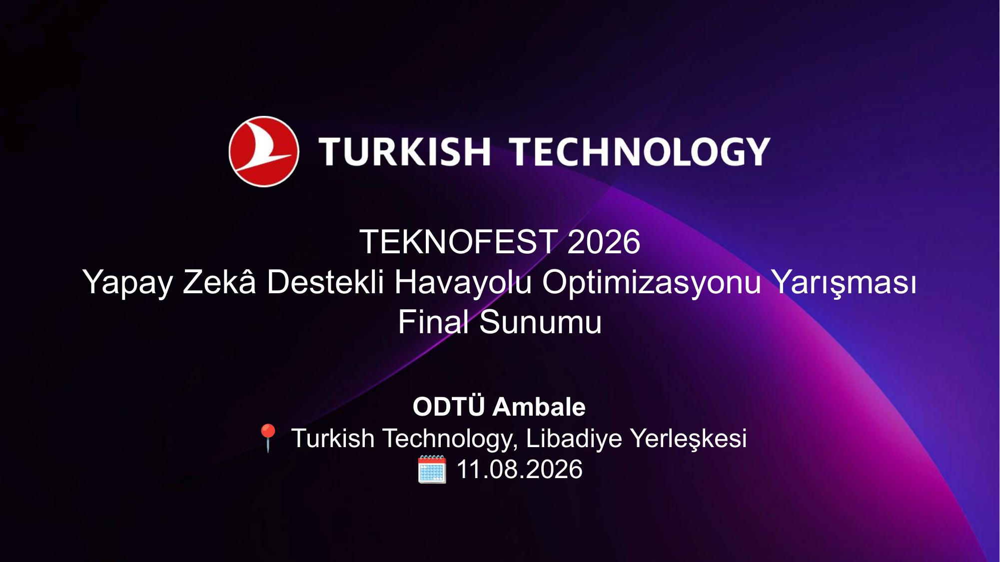

Final presentationAirline network optimization
Built an end-to-end mixed-integer optimization pipeline in a three-person team to improve Istanbul hub connections under capacity, aircraft rotation, regularity, and route-balance constraints. Connected-component decomposition reduced the measured solve time from 102.6 minutes to 3.55 minutes on the same problem scope.
- 28.93×
- faster than monolithic
- 30.35%
- objective uplift
- 4,712
- selected connections
- Python
- Pyomo
- HiGHS
- MIP
- Decomposition